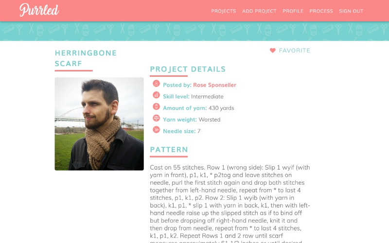
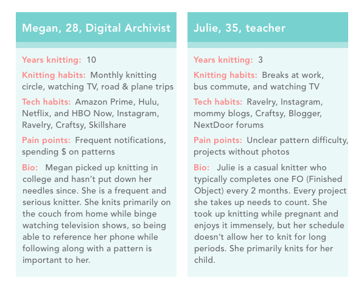
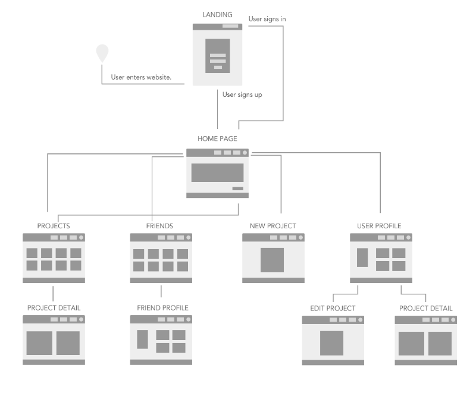
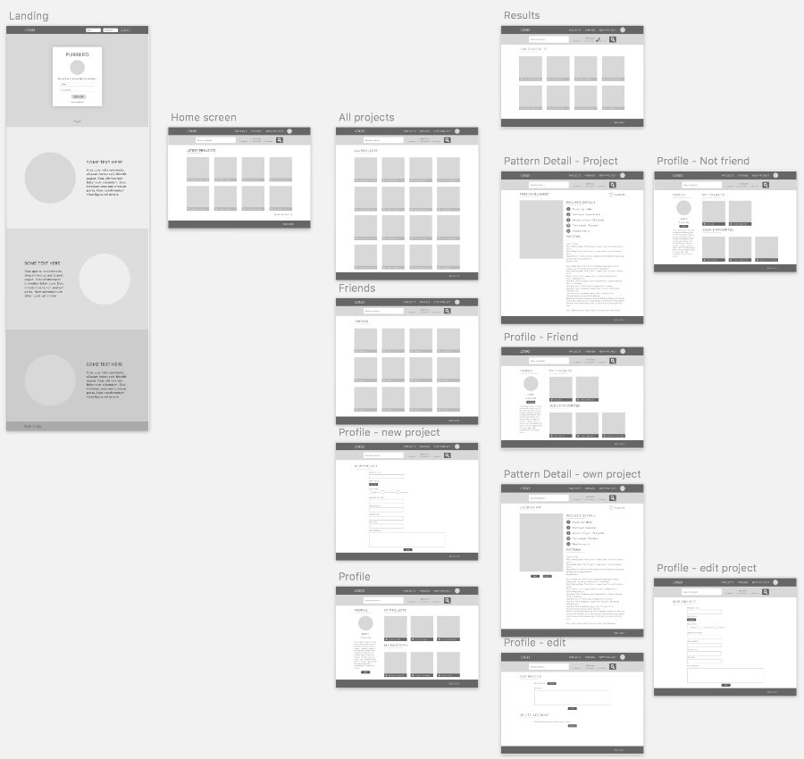
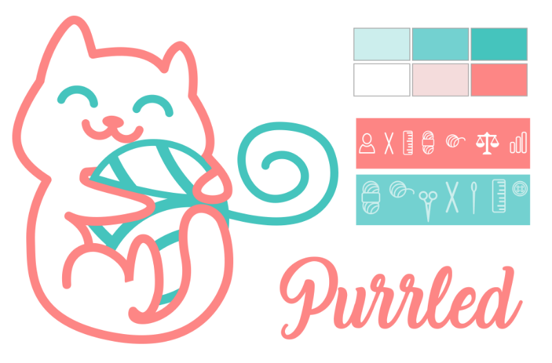
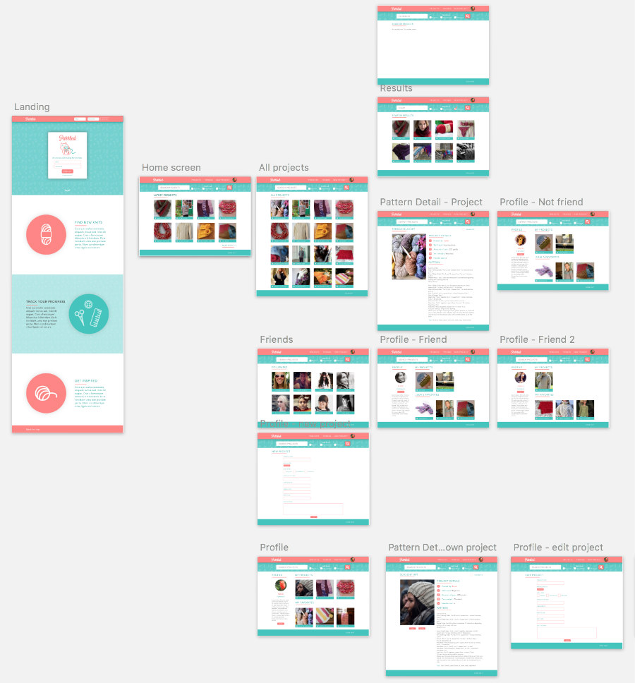

Calling all knitters! Want to show off your latest finished objects? Purrled is an online destination for knitters to share their latest projects and to look for inspiration and ideas. The web app was first designed in Sketch and InVision, then later built with Angular and TypeScript, with Firebase used for database storage.
The idea for Purrled stemmed from Ravelry, the internet's #1 destination for anything related to knitting and fiber arts. I'm an avid knitter and Ravelry is my go-to for patterns and inspiration, but Ravelry's design is in need of a refresh, so I set out to make a clone of it with my own spin.
My own experiences of navigating Ravelry led me to create Purrled. Every time I sign in to Ravelry, I am overwhelmed with links and blog posts that aren't relevant to what I am looking for — the search function and photos of recently posted projects. For my redesign, I wanted to highlight the latest projects, the user's own projects and keep the search function at the forefront for convenience. Additionally, the mobile experience on Ravelry leaves a lot to be desired. Knitting is usually not done when sitting in front of a computer, so having a mobile friendly option where a user can reference knitting patterns while on a phone or tablet was paramount when designing Purrled.
Where to begin? Purrled began with its name. A purl is a type of knit stitch and cats have a special relationship with yarn, of course. So from there, I knew I wanted to the mascot of Purrled to be a cute and welcoming cat hugging a ball of yarn, but I couldn't get too ahead of myself and dive into design just yet!
Before I began wireframing or designing, I created a Google survey and shared it amongst a knitting community I'm a part of and asked questions regarding knitting habits: Where do you do most of your knitting? How do you follow patterns? Do you reference knitting patterns from your computer while knitting? Do you reference knitting patterns from your phone while knitting? Spoiler alert: knitters most love knitting while travelling or on the couch, referencing their phone or a notebook along the way. I received 12 responses and developed my personas from them. 
Once I developed the personas for Purrled, I created quick sketches of wireframes and developed a user flow for the app:
Now that I had a clear flow for the app, I then took my quick sketches to create low-fidelity mock ups of Purrled for three screen sizes: mobile, tablet, and desktop. Here's the desktop version:
Next was the Purrled's branding. It was important for me to have ownership of all the visual aspects of Purrled, I didn't want to use any clip art. I drew the cat mascot and icons with Sketch, then came up with a friendly and playful color palette:
Once the branding was in place, I created high fidelity mock ups of Purrled and exported them in InVision to test the flow of the app. To ensure users could access the app smoothly, I observed a few colleagues use the prototype while I asked them to perform various tasks within the app, such as "how do you log out?" or "how would you add a new project?". My test users had difficulty finding the log out functionality (in the footer), so I ended up moving it to the header in the web version.
The last step of development was actually coding it out! I had a couple weeks to develop Purrled and spent the first week creating the concept, survey, personas, user flow, wireframes, branding, mock ups, and prototype, so I knew I had to scale back. Angular CLI and Firebase were my framework and databse of choice due to my familiarity with them. Instead of a username/email and password for signing in, I ultimately opted for Google authentication. I wanted users to be able to sign in as easily as possible while they were on their phones and get back to knitting ASAP. The biggest hurdle I encountered during the development of Purrled was having users upload photos and getting them to save to a database, but I was able to manage it thanks to a great serious of videos from Wes Doyle.
{kind=link}
{kind=link}
{kind=link}
{kind=link}
{kind=link}
{kind=link}
{kind=link}